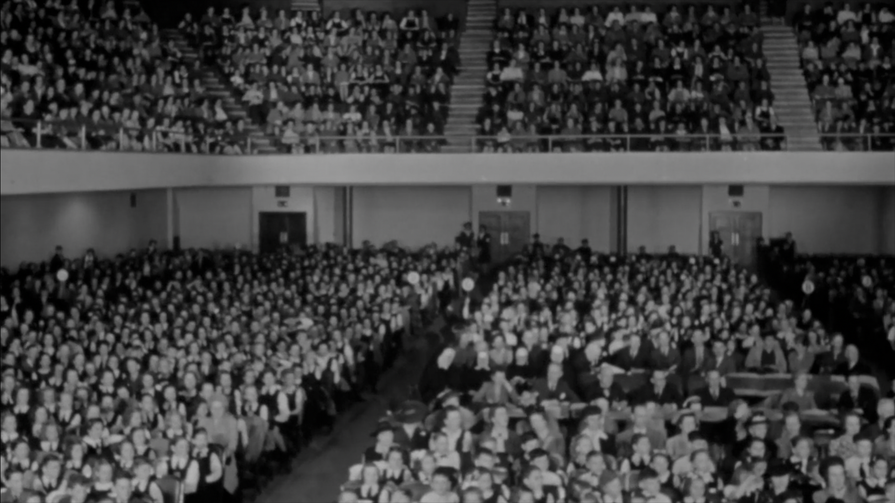

-1-MasterItem.svg)
Stories of Westminster United Church & its People / Page
168
After living for a period in the New York area, the Storys moved in 1956 to
Washington DC,
where Myfanwy became contralto soloist at Westmoreland Congregational Church.
In her family life, she and Bill raised two children, Kirk and Marianne.
In 1970, she died of cancer after a long illness.
Table
of Contents
Music at Westminster
Note on the Winnipeg Civic Auditorium
The picture below shows the audience at a
Manitoba Music Festival performance in the
Civic Auditorium (long since converted into the
Manitoba Archives Building- St. Mary Ave. and
Vaughan Street.) For years the Auditorium was
our principal Concert Hall.The Wpg Symphony
performed there from 1948 till the present
Concert Hall was built in 1968. Fred Gee's
Celebrity Concert Series was presented there,
the Manitoba Music Festival classes all
performed in that space or in a smaller concert
hall space in the back of the building. The main
Auditorium could take out most of the main floor seats and put in a boxing ring
for boxing events. In the basement of the building we
could go roller skating. And on the outer space around the main floor (the
exhibition galleries) was our Museum (glass cases of
stuffed birds and other old things.) On the second floor was our Art Gallery.
A further note on the building's history
.
